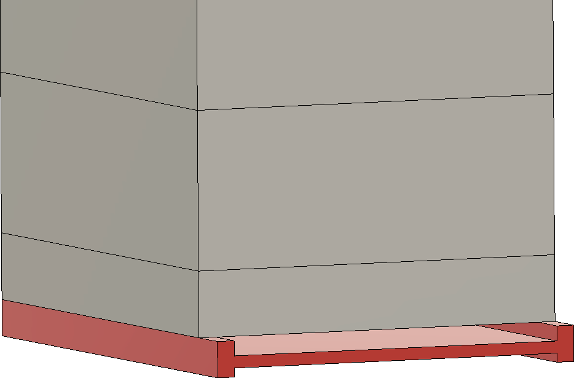

Overview

Typical Langstroth Hive Parts
The bottom board provides a hive with a floor, and also provides for an entrance to the hive.

Hive Bottom Board
This entrance is where an entrance reducer is placed to reduce the opening even further.
The bottom board sits atop the hive stand.
There are two types of bottom boards: solid & screened. Some people prefer one over the other, and they all seem to have good reasons why their choice is best. Which one you use is a bit of a personal choice.
Historically, solid bottom boards were the only option, but screened bottom boards came along around 40-50 years ago. The basic considerations for one vs. the other are highlighted below.
|
Solid |
Screened |
|
|
Is This Part Necessary?
Every Langstroth hive box must have a bottom board.
Usage Notes

Many bottom boards have different spacing, depending on which side is up. It is best to go with the opening of ¾" as that provides adequate spacing for later adding an entrance reducer.
Notes on Making One
When making a bottom board, consider these notes.
All wood used must be untreated. Pressure-treated wood is made with some nasty chemicals and these are not good for the bees.
Use solid wood boards, not plywood. Untreated plywood will not wear well when exposed to the weather, even when painted.
|
Cupped Horizontal Board |
The horizontal board may cup when it ages, particularly if it was not dried well. If it is attached to the side pieces using a dado, it can bow the sides out as shown in the picture to the left. That picture is an exaggerated view, but that was done to show the idea. Thusly, this approach is also not recommended. |
|
| |
|
Recommended Approach |
Instead, consider making the bottom board using 3 sets of pieces. The horizontal piece (dark orange) should be the full width and length of the bottom board. (Also, using this approach, determining this board's size is quite easy.) The upper pieces (brown) should be ¾" high X ¾" wide. There will be 3 of these (two sides and the back). These pieces should be glued and nailed to the horizontal piece. The lower pieces (blue) should be ⅜" high X ¾" wide. There will be 3 of these (two sides and the back). These pieces should be glued and nailed to the horizontal piece. |